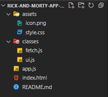
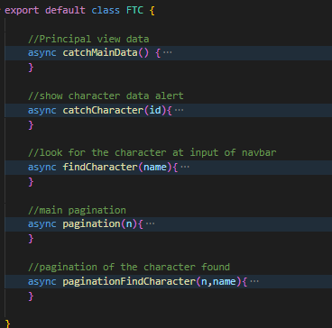
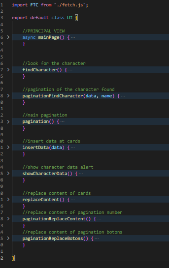

/Rick and Morty app
-Why start this project?
I made this porject because i wanted to practice all what i learned about vanilla javascript, this was my first project.
-Where does the data comes from?
For this project i am using the Rick and Morty API provide by this web site "https://rickandmortyapi.com", in the documentation you can find how to make different queries and all about the API.
-Technology stack
For this project i used HTML, CSS, BOOTSTRAP AND VANILLA JAVASCRIPT
-Structure
This app has the following structure:

I used the app.js to start the process of creating the first view of the data in the page, all the fetch request are in a separate js, inside the "js fetch" you can find this functions:

I used a "class" so i can export all the functions and use it in another js that handles the UI of the page, inside of the "ui.js file" you can find the following functions:

Almost all the js are functions because i think that´s a good way to manage a project like this.